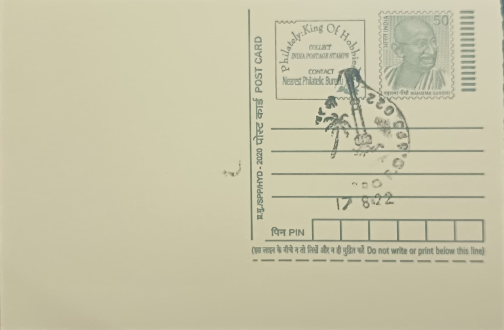

Rocket and Coconut Tree
റോക്കറ്റും തെങ്ങും


The pairing of a rocket with a coconut tree on this cancellation points directly to Thumba, a once-quiet fishing hamlet on the outskirts of Thiruvananthapuram that became the birthplace of India's space programme. The site was chosen for a precise scientific reason: it sits almost exactly on the geomagnetic equator, the line where a freely suspended magnetic needle dips to horizontal, making it exceptionally well suited to the sounding-rocket studies of the ionosphere and upper atmosphere that India's earliest space scientists wished to conduct. The coconut palms fringing the shoreline were, and remain, the defining backdrop of this otherwise unassuming coastal stretch of Kerala.
Thumba Equatorial Rocket Launching Station (TERLS) was established here on 21 November 1963, when a two-stage, American-built Nike-Apache sounding rocket lifted off, marking independent India's first venture into space research. The facility was set up under the Indian National Committee for Space Research (INCOSPAR), formed in 1962 under the guidance of Dr Vikram Sarabhai, and was later given formal international status as a United Nations-sponsored range open to scientists from other countries. H. G. S. Murthy served as its first director, and the launch station's success laid the institutional groundwork from which the Indian Space Research Organisation (ISRO) itself would emerge in 1969.
Because no dedicated government land was readily available at Thumba, Sarabhai turned to the local Catholic church of St Mary Magdalene and the adjoining Bishop's House, whose plots occupied the ideal spot on the magnetic equator. The Bishop of Thiruvananthapuram put the question to his congregation after Sunday Mass, and the parishioners agreed to vacate the church for the nation's scientific mission. The church's prayer hall became the scientists' first laboratory and the Bishop's House their design office, while famously scarce resources meant rocket parts and components were ferried to the launch site by bicycle and bullock cart, a detail often cited as emblematic of the programme's improvised, shoestring beginnings.
Among the small team assembled at Thumba was a young aeronautical engineer named A. P. J. Abdul Kalam, who had initially been an unlikely candidate for the project but went on to play a central role in the Nike-Apache launch and later became ISRO's chairman and, eventually, President of India. In recognition of its historic role, the original church building was converted in 1985 into the Space Museum, where the sandalwood statue of Mary Magdalene still stands above what was once the altar, now overlooking rocket models and early space-programme artefacts rather than a congregation.
TERLS was eventually absorbed, along with several other rocket and propellant facilities, into a larger consolidated organisation named in 1972 the Vikram Sarabhai Space Centre (VSSC) in honour of the programme's founding figure, and VSSC remains headquartered at Thumba today as one of ISRO's lead centres for launch vehicle design and development. The land dispute over the church's title was only formally resolved in 2019, when the Travancore-Cochin Catholic Diocese was granted compensation and title deed decades after the original 1962 handover. The Thiruvananthapuram ISRO Post Office, serving VSSC's campus and township, continues to carry this founding episode in its cancellation, pairing the rocket with the coconut tree as shorthand for a space programme that grew out of a fishing village church rather than a conventional launch complex.
| Date of Introduction | April 19, 1977 |
|---|---|
| Address | Sub Postmaster, |
| Thiruvananthapuram ISRO SO, | |
| Thiruvananthapuram (dt.), Kerala - 695022. |